Publications
* indicates corresponding author.
2026
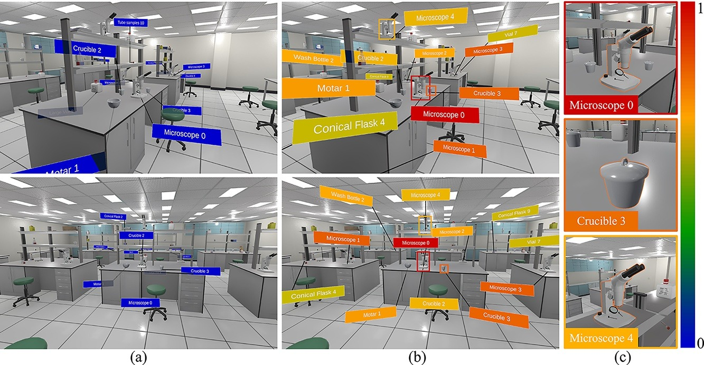
User perception based label layout for efficient target localization in virtual environment
Jian Wu, Shuai Luan, Dong Zhou, Wei Ke, Lili Wang*.
International Journal of Human-Computer Studies, Volume 211, April 2026, 103801.
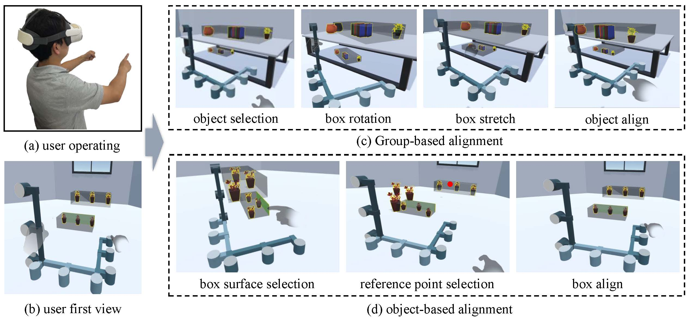
Align-Box: Enable Fast Bare-Hand Multi-Object Alignment in VR
Jian Wu, Ziteng Wang, Runze Fan, Qixiang Ma, Lizhi Zhao, Xuehuai Shi, Lili Wang*.
International Journal of Human-Computer Interaction.
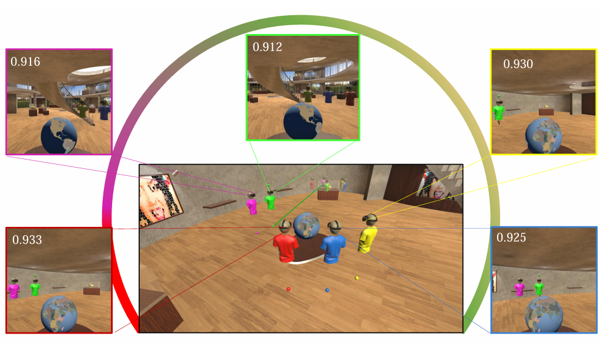
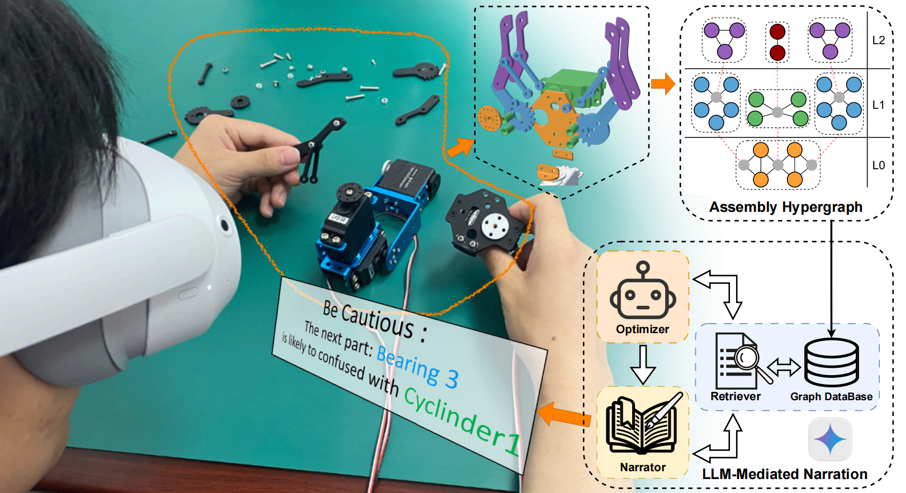
From Structure to Semantics: Hypergraph-Based AR Assembly Guidance with LLM-Mediated Narration
Xinda Liu, Bowei Zhang, Jiaju Xu, Jian Wu*, Guohua Geng, Lili Wang.
IEEE Transactions on Visualization and Computer Graphics (IEEE TVCG)
Also presented at IEEE Conference Virtual Reality and 3D User Interfaces (IEEE VR)
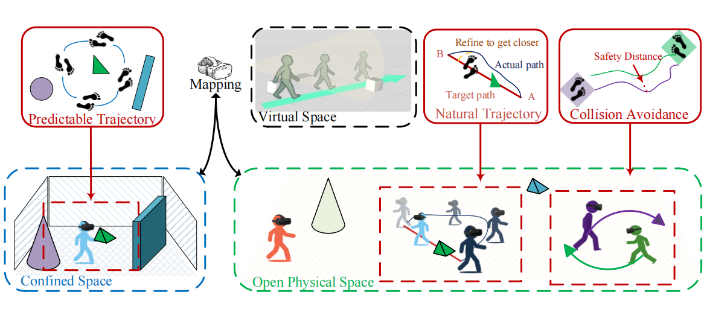
Walking in the Wild: Safe and Natural Redirected Walking in Open Physical Spaces
Xinda Liu, Qinyu Zhang, Guoqiang Yang, Yunchen Li, Jian Wu*, Guohua Geng, Lili Wang.
IEEE Conference Virtual Reality and 3D User Interfaces (IEEE VR)
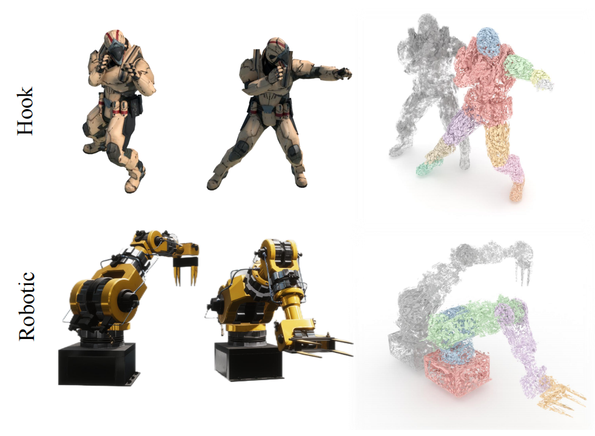
Motion Hierarchical Gaussian for Dynamic Control in VR
Runze Fan, Jian Wu, Qixiang Ma, Zhikai Wen, Lili Wang*.
IEEE Transactions on Visualization and Computer Graphics (IEEE TVCG)
Also presented at IEEE Conference Virtual Reality and 3D User Interfaces (IEEE VR)
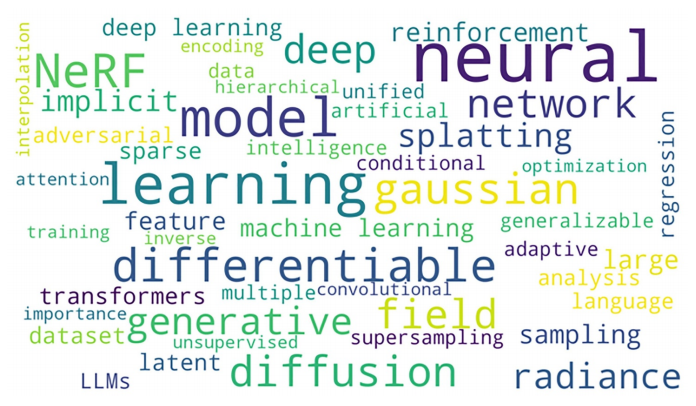
Artificial intelligence for virtual reality: a review
Lili Wang, Weiwei Xu, Yebin Liu, Miao Wang, Beibei Wang, Xubo Yang, Lan Xu, Zhangyao Tan, Runze Fan, Zijun Wang, Chi Wang, Hongwen Zhang, Yijian Wen, Haozhong Yang, Jian Wu*, Jiahui Fan, Hui Wang, Qixuan Zhang, Guoping Wang, Yongtian Wang, Qinping Zhao.
Science China Information Sciences, 69(1), 1-64.
2025
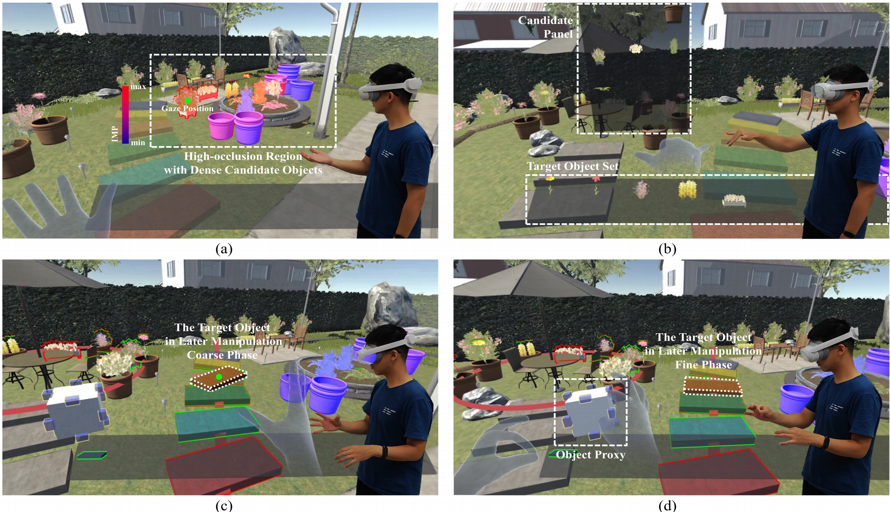
MOA: Efficient Scene-aware Multi-object Arrangement in VR
Xuehuai Shi, Yuhan Duan, Ziteng Wang*, Jian Wu*, Zhiwen Shao, Jieming Yin, Lili Wang.
IEEE Transactions on Visualization and Computer Graphics (IEEE TVCG), 2025.
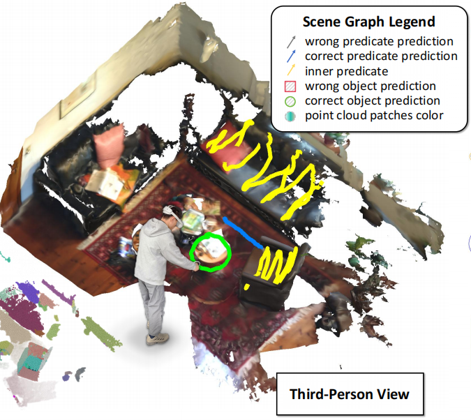
SGSG: Stroke-Guided Scene Graph Generation
Qixiang Ma, Runze Fan, Lizhi Zhao, Jian Wu, Sio-Kei Im, Lili Wang*.
IEEE Transactions on Visualization and Computer Graphics (IEEE TVCG), 2025.
Also presented at IEEE ISMAR.
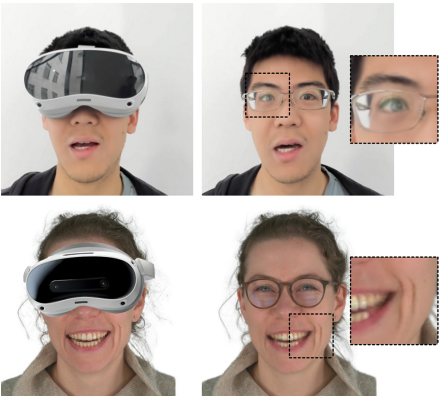
HFM-GS: half-face mapping 3DGS avatar based real-time HMD removal
Kangyu Wang, Jian Wu, Runze Fan, Hongwen Zhang, Sio Kei Im, Lili Wang*.
IEEE Transactions on Visualization and Computer Graphics (IEEE TVCG).
Also presented at IEEE ISMAR.
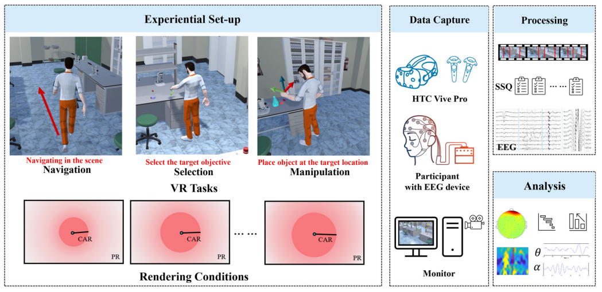
Cybersickness Exploration for Different VR Tasks Under Variable Rendering Conditions
Peike Wang, Ming Li, Jian Wu, Lili Wang*, Yong-Jin Liu.
International Journal of Human-Computer Interaction (IJHCI).
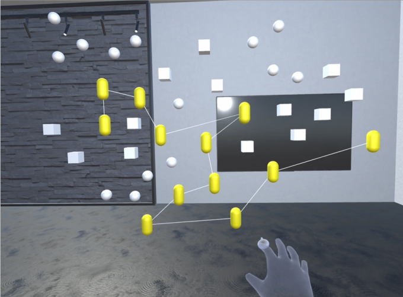
HandBrush for Efficient Object Grouping in Virtual Environment with Bare-Hand
Sichun Huang, Jian Wu, Runze Fan, Sio Kei Im, Lili Wang*.
International Journal of Human-Computer Interaction (IJHCI), 41(15), 9797-9821.
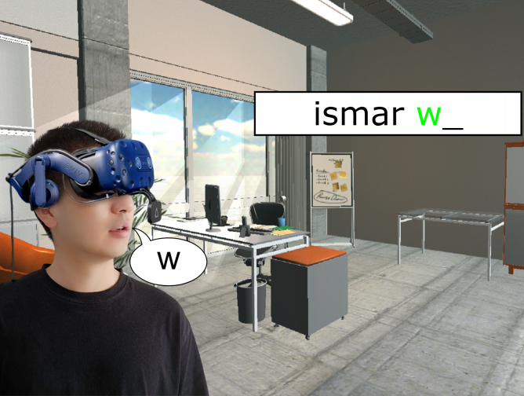
LipText: Lip Tracking Based Text Entry in VR
Jiaye Leng, Zijun Wang, Jian Wu*, Lili Wang.
International Conference on Extended Reality (ICXR), 162-178.

Audio-visual aware Foveated Rendering
Xuehuai Shi, Yucheng Li, Jiaheng Li*, Jian Wu, Jieming Yin*, Xiaobai Chen, Lili Wang.
IEEE Transactions on Visualization and Computer Graphics (IEEE TVCG).

Fov-GS: Foveated 3D Gaussian Splatting for Dynamic Scenes
Runze Fan, Jian Wu, Xuehuai Shi, Lizhi Zhao, Qixiang Ma, Lili Wang*.
IEEE Transactions on Visualization and Computer Graphics (IEEE TVCG), 31(5), 2975-2985.
Also presented at IEEE VR. VR 2025 Best Paper Honorable Mention.

2024
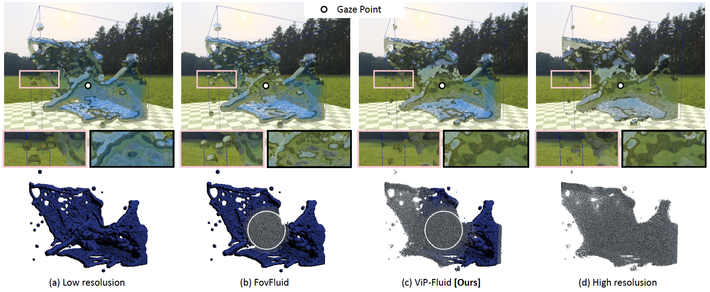
ViP-Fluid: Visual Perception Driven Method for VR Fluid Rendering
Qixiang Ma, Jian Wu*, Runze Fan, Guodong Sun, Xuehuai Shi.
2024 IEEE International Symposium on Mixed and Augmented Reality (ISMAR), Bellevue, WA, USA, 2024, pp. 359-367.
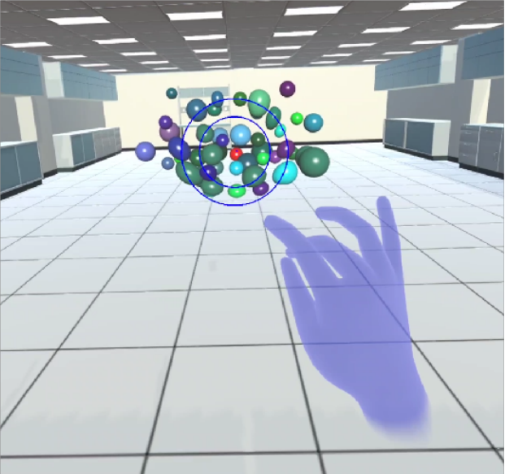
Manipulable Cone Based Bare Hand Object Selection in High Occlusion Virtual Environment
Jiaqi Zhou, Jian Wu, Sio Kei Im, Runze Fan, Lili Wang*.
International Journal of Human-Computer Studies (IJHCS), 196, 103432.
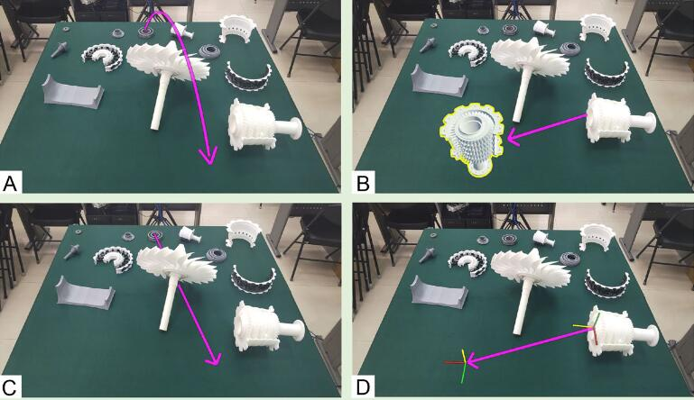
AVICol: Adaptive Visual Instruction for Remote Collaboration Using Mixed Reality
Lili Wang*, Xiangyu Li, Jian Wu, Dong Zhou, Im Sio Kei, Voicu Popescu.
International Journal of Human-Computer Interaction (IJHCI), 41(2), 1260-1279.
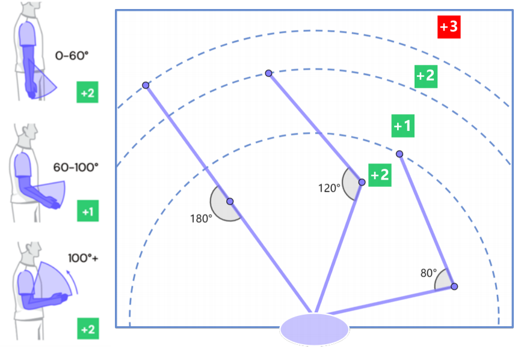
Efficient and Comfortable Haptic Retargeting with Reset Point Optimization
Aoxin Sun, Jian Wu, Runze Fan, Sio Kei Im, Lili Wang*.
IEEE Transactions on Visualization and Computer Graphics (IEEE TVCG).
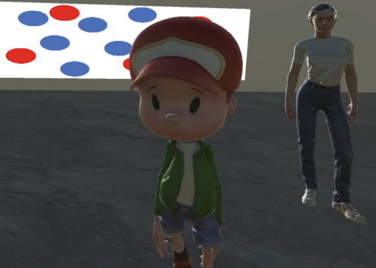
Where Should a Virtual Guide Stand in a VR Museum?
Xinda Liu*, Kun Jiang, Jian Wu, Lili Wang, Guohua Geng.
International Conference on Extended Reality (ICXR), 312-328.
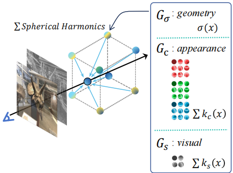
VPRF: Visual Perceptual Radiance Fields for Foveated Image Synthesis
Zijun Wang, Jian Wu, Runze Fan, Wei Ke, Lili Wang*.
IEEE Transactions on Visualization and Computer Graphics (IEEE TVCG), 30(11), 7183-7192.
Also presented at IEEE ISMAR. ISMAR 2024 Best Student Journal Paper.

Scene-aware Foveated Neural Radiance Fields
Xuehuai Shi, Lili Wang*, Xinda Liu, Jian Wu, Zhiwen Shao.
IEEE Transactions on Visualization and Computer Graphics (IEEE TVCG).
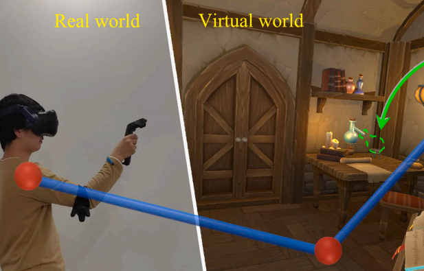
EEBA: Efficient and ergonomic Big-Arm for distant object manipulation in VR
Jian Wu, Lili Wang*, Sio Kei Im, Chan Tong Lam.
International Journal of Human-Computer Studies (IJHCS), 188, 103273.
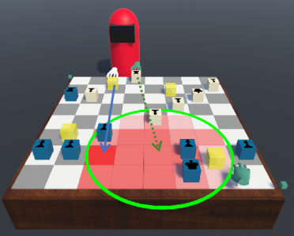
Proxy Importance Based Haptic Retargeting With Multiple Props in VR
Ziming Liu, Jian Wu, Lili Wang*, Xiangyu Li, Sio Kei Im.
IEEE Transactions on Visualization and Computer Graphics (IEEE TVCG).
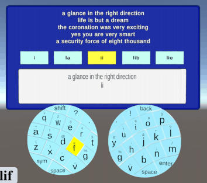
FanPad: A Fan Layout Touchpad Keyboard for Text Entry in VR
Jian Wu, Ziteng Wang, Lili Wang*, Yuhan Duan, Jiaheng Li.
IEEE Conference on Virtual Reality and 3D User Interfaces (IEEE VR), 222-232.
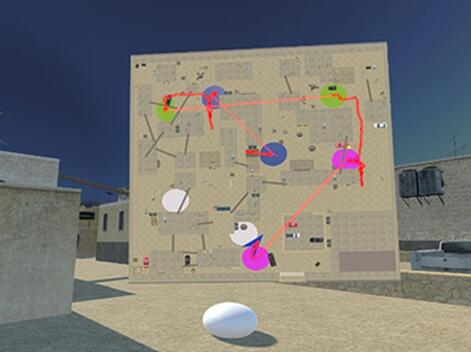
Before 2024
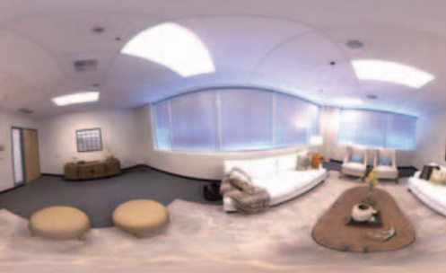
Interactive Panoramic Ray Tracing for Mixed 360 RGBD Videos
Jian Wu, Lili Wang*, Wei Ke.
IEEE VRW, 777-778.
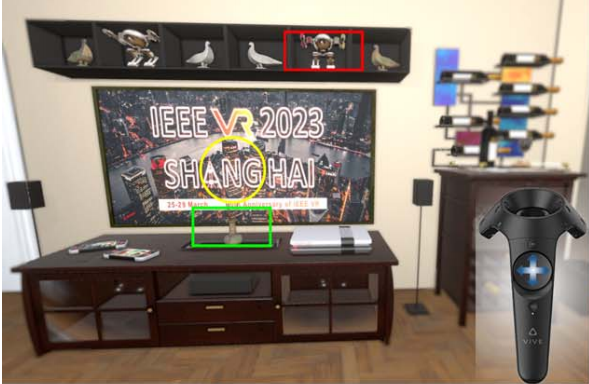
Locomotion-aware Foveated Rendering
Xuehuai Shi, Lili Wang*, Jian Wu, Wei Ke, Chan-Tong Lam.
IEEE VR, 471-481.
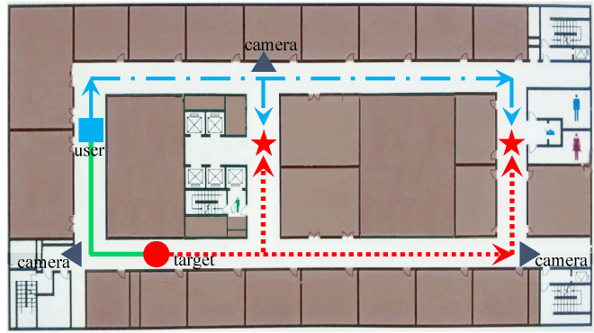
AR assistance for efficient dynamic target search
Zixiang Zhao, Jian Wu, Lili Wang*.
Computational Visual Media (CVM), 9(1), 177-194.
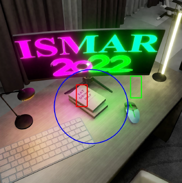
Foveated Stochastic Lightcuts
Xuehuai Shi, Lili Wang*, Jian Wu, Aimin Hao. 2022.
IEEE Transactions on Visualization and Computer Graphics, 28(11), 3684-3693.
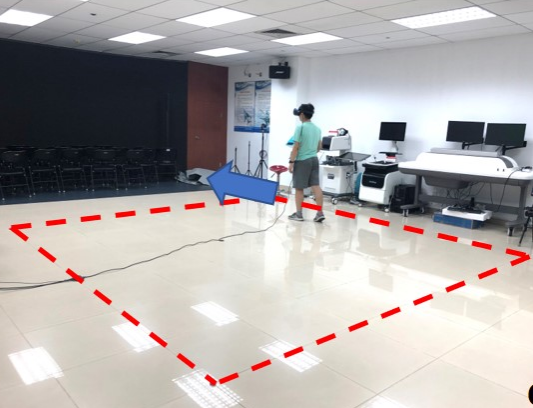
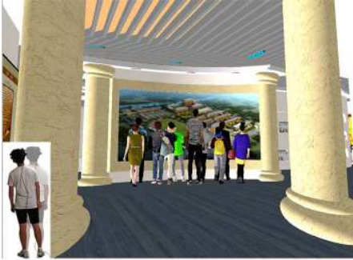
Quantifiable Fine-Grain Occlusion Removal Assistance for Efficient VR Exploration
Jian Wu, Lili Wang*, Hui Zhang, Voicu Popescu. 2022.
IEEE Transactions on Visualization and Computer Graphics, 28(9), 3154-3167.
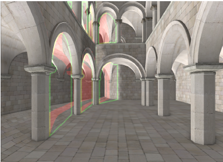
VR Exploration Assistance through Automatic Occlusion Removal
Lili Wang*, Jian Wu, Xuefeng Yang, Voicu Popescu. 2019.
IEEE Transactions on Visualization and Computer Graphics, 25(5), 2083-2092.
Also presented at IEEE VR 2019.
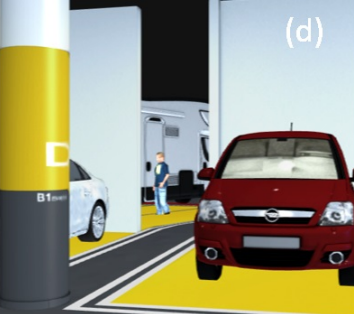
Occlusion management in VR: A comparative study
Lili Wang*, Han Zhao, Zesheng Wang, Jian Wu, Bingqiang Li, Zhiming He, Voicu Popescu. 2019.
IEEE VR 2019, 708-716.